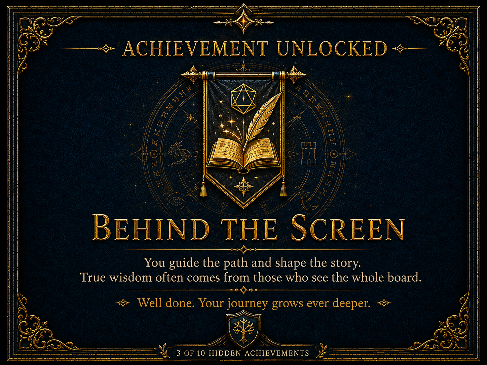

Guild Ranks
The Adventurer’s Guild uses a structured rank system to organize members according to their experience, proven skill, reliability, and the level of responsibility they are prepared to accept. Every new member begins at Bronze Rank and earns advancement by completing contracts, supporting fellow adventurers, following the Guild Code of Conduct, and demonstrating sound judgment in dangerous situations.
 Bronze Rank
Bronze Rank
Bronze adventurers are new members of the guild.
They take beginner contracts, local missions, and
lower-risk quests while proving their reliability.
View Bronze Rank
Levels 1-4
Bronze adventurers are new members of the guild. They take beginner contracts, local missions, and lower-risk quests while proving their reliability.
View Bronze Rank
 Silver Rank
Silver Rank
Silver adventurers have proven themselves through
successful contracts and are trusted with more
dangerous regional quests.
View Silver Rank
Levels 5-8
Silver adventurers have proven themselves through successful contracts and are trusted with more dangerous regional quests.
View Silver Rank
 Gold Rank
Gold Rank
Gold adventurers are respected guild members who
handle major threats, important contracts, and
missions requiring advanced skill.
View Gold Rank
Levels 9-12
Gold adventurers are respected guild members who handle major threats, important contracts, and missions requiring advanced skill.
View Gold Rank
 Platinum Rank
Platinum Rank
Platinum adventurers are elite members of the guild
trusted with high-risk assignments, powerful enemies,
and matters of great importance.
View Platinum Rank
Levels 13-16
Platinum adventurers are elite members of the guild trusted with high-risk assignments, powerful enemies, and matters of great importance.
View Platinum Rank
 Adamantine Rank
Adamantine Rank
Adamantine adventurers are legendary figures within
the guild. Their actions shape history, protect
kingdoms, and define the legacy of the Adventurer's
Guild.
View Adamantine Rank
Levels 17-20
Adamantine adventurers are legendary figures within the guild. Their actions shape history, protect kingdoms, and define the legacy of the Adventurer's Guild.
View Adamantine RankHow Rank Advancement Works
Guild advancement combines character level with completed quests. A character’s guild rank should generally remain close to their character level while also representing the experience, reliability, and reputation they have earned through guild service.
Complete Field Training
Every accepted member begins with Field Training and Observation, commonly called FTO. The recruit completes three introductory quests while accompanied by an experienced Guild Trainer.
The trainer may provide guidance, correct unsafe decisions, or intervene when the recruit is in serious danger. After completing all three training quests, the character officially becomes a Bronze 1 adventurer.
Complete Quests
After FTO, characters earn advancement by completing guild quests. In an experience-based campaign, each quest may award advancement experience comparable to the amount needed for a normal character level increase.
In a milestone campaign, the Dungeon Master may instead require a set number of successful quests. Three to five quests for each advancement is generally recommended.
Meet Rank Requirements
A character must complete the required quests and meet the minimum character level for the next guild rank. Characters advance through every numbered step and may not skip ranks.
Incremental promotions normally provide recognition or currency, while advancement into a new rank may include a ceremony and a level-appropriate magic item.
Level and Rank Requirements
- Characters must meet the minimum character level for a rank.
- A character must be at least level 5 before normally qualifying for Silver 1.
- New members begin at Bronze 1 regardless of their existing character level.
- Higher-level characters may have their early promotions expedited until their rank more closely matches their level.
- Characters cannot skip a rank or any numbered stage within that rank.
- Early promotion is possible, but it may give a character access to quests beyond their current abilities.
Failure and Demotion
- Repeated quest failures may result in demotion at the Dungeon Master’s discretion.
- Five failed quests is the recommended guideline for considering a demotion.
- Demotion does not reduce the character’s actual level.
- Demoted characters lose access to higher-paying and more prestigious contracts.
- Guild officials and other NPCs may recognize the character’s damaged reputation.
- Contract rewards may be reduced by 10% for each rank lost through demotion.
